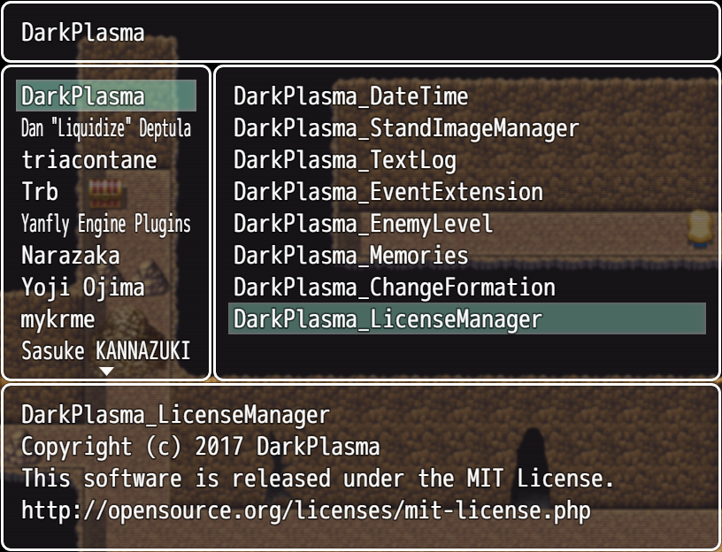

RPGツクールMVのプラグイン MITライセンスについて
目次
RPGツクールMVのプラグインがMITライセンスで公開される理由と、それ以外のライセンスが採用されない理由について
また、プラグインの利用者としてオープンソースライセンスについて知っておくほうが良いことを記します。
はじめに
この記事に書かれている内容は筆者（Plasma）の理解を門外漢にもわかりやすいようにひたすらに噛み砕いたものです。
正確性を損なわないよう気を使ってはいますが、どうしても厳密な話とはかけ離れてしまうことがあります。
特にライセンスの厳密な内容については英語の原文を読んでそれを解釈する必要があり、人によって解釈が分かれることもあります。
なかなかこういう事を書くには勇気がいるのですが、RPGツクールでプラグインを利用する方（すなわち、ライセンスというものについて明るくない方）に関してはこの記事の内容程度の理解でも問題ないとあえて書きます。
そうでなければ利用者はいつまでもライセンスを恐ろしいものと思い込んだまま、寛容なライセンスのもとで良いものが公開されているにも関わらず、それが（全く不毛な恐怖によって）利用されないで埋もれていくのです。
特にRPGツクールMVは公式ツイッターがMITライセンスを推奨しているため、良質なプラグインの多くがMITライセンスを採用しています。
プラグインを利用する側として、少しは意識しておきたい（けど難しい話はわからない）という方に向けた記事であり、またプラグインを書いている（書こうと思っている）がライセンスについて意識し始めたいという方にも読んでいただける内容になっています。
記事の後半では利用しているプラグインの著作権とライセンスについての表記をゲーム画面中に表示してくれるプラグインの紹介もします。
オープンソースライセンスって？
オープンソースなソフトウェアの利用について、作者が許可したり禁止したり、利用者に課している条件などを取りまとめた文書です。
この記事においては、オープンソースなソフトウェアというのは、公開されたRPGツクールMVのプラグインのことです。
また、オープンソースライセンス（を始めとする、プラグインに定められた利用許諾）のことを単にライセンスと呼びます。
利用者はこのライセンスの内容を守ってプラグインを利用することが望ましく、モノによってはそのプラグインを利用して作ったゲームのソースコードをすべて開示せよという請求を受けたりする可能性があるため、注意しておきたい項目です。
MITライセンスって？
RPGツクールMVのプラグインにおいてよく採用されているMITライセンスは、非常に寛容で簡潔な条文のライセンスです。
寛容であるということは利用者に課せられる制約が緩いということです。
利用者はたった二つの条件を飲むだけで、MITライセンスのプラグインを利用してゲームを作ることができます。
- ライセンスと共に記されている著作権表示（Copyright）とライセンスの全文を、ゲームを含む配布物の中に記す
- プラグインの作者はそのプラグインについて何も保証しない
1について、js/pluginsディレクトリを隠さずにゲームを配布する場合は、その中のプラグインに著作権とライセンスが記されているはずですので、利用者は特に何もしなくて構いません。
（RPGアツマール等、ブラウザ上でプレイできる形式で公開する場合も、js/plugins下は外から容易に見えるものですので、特に利用者に必要とされる負担はありません）
ただし、.exeにパッキングする等して外からプラグインを見れないようにしてしまうと、そのゲームのプレイヤーはプラグインについてどんなライセンスが適用されているのか、容易に知ることができません。
そういった場合、（多少議論はあるようですが）外から見えるような場所（つまり、ゲームと一緒に配布するテキスト等）に著作権とライセンスについて明記するべきである、という解釈が主流のようです。
2についてはMITに限らず多くの（すべての？）種類のライセンスについて（細かな言い回しの違いはあれど）だいたい共通しているものです。
プラグインを入れてゲームがバグったと言われても、プラグインの作者がそれに対応する義務はないのです。
プラグインそのものにバグがあるよ、という報告であれば、たいていの作者は喜んで直してくれるでしょうし、プラグインに関する問い合わせを全く無視する人も実際はほとんどいないでしょう。
しかし、プラグインを利用したことによって生じた損害について責任を求めたりしないでね、という内容については理解しておくべきです。
普通にプラグインを利用するだけであれば、2は問題にならず、1がちょっと面倒くさいだけです。
なぜMITライセンス？
では、ちょっと面倒くさい作業を発生させるMITライセンスがなぜRPGツクールMVのプラグインにおいてよく使われているのでしょうか。
その理由はいくつかあります。
ツクール公式が推奨している
RPGツクールMV用のプラグインを制作・公開される場合、利用される方がわかりやすいように利用条件の表示をお勧めしております。RPGツクールMVではMITライセンスを推奨いたします。詳細は、こちらをご覧ください。 https://t.co/r2aOPvr4ga #tkool
— ツクール開発部 (@tkool_dev) 2015年11月17日
このように、ツクール公式ツイッターでMITを推奨する旨が明言されています。
有名なプラグイン作者が採用している
おそらくツクールMVプラグインで最大手であろう、トリアコンタンさんのプラグインがMITを採用しています。
寛容かつ原文が非常に短い
MITライセンスは寛容な二つの条件さえ守れば自由に扱える上、全文が非常に短く簡潔です。
これくらいの長さなら、辞書を引きながらでもなんとか読めそうですよね。
利用者に対して面倒な制限はなるべくかけたくない。
けどプラグインについて自分が書いたものである旨は残しておいてほしい。
そういう要求に最も当てはまり、最も広く使われているライセンスがMITなのです。
他のライセンスではだめだったの？
MITライセンス以外のライセンスについて、制限の緩いものを書き出してみます。
BSDライセンス
MITと違い、ライセンスを採用したプログラムを利用して作られた別のプログラムをバイナリで配布する場合についての利用条件が明記されています。
ただし、BSDライセンスには複数の種類があり、それぞれについて利用条件の厳しさが異なります。
2-Clause、3-Clause、4-Clauseの3種類があり、この数字は条件の項目数を表します。（つまり、数字が大きいほど制約が多くなります）
単にBSDライセンスと書かれていた場合、どれが採用されているかは作者のみぞ知るということになります。
4-Clauseの条件まで満たしておけば問題ありませんが、いちいちすべての宣伝物に対して謝辞を入れる必要があったりして割と面倒な条件だったりします。
その条件が非常に面倒なものであったため、現在主流で使われるのはその条件を削除した3-Clauseまたは2-Clauseです。
2-Clauseであればバイナリで配布する際に、BSDライセンスの内容と著作権表記を付属のテキストに記述しておく必要があると明記されている以外はMITと実質的に同じです。
こういった事情について、ライセンスをよく知らない人に説明する手間や、条項の数を明示しないとどれを採用しているかわからないといった複雑さから、MITライセンスのほうが好まれるのでしょう。
Apache License 2.0
プログラムを改変して使う場合に、自分が改変したことを明記する必要があります。
それ以外はMITと実質的に同じで、RPGツクールMVのプラグインとして気にすべき部分はほぼ変わりませんが、特許や商標に関する細かな規定があり、ライセンス全文がMITに比べてかなり長いです。
スマホアプリ等の商業ソフトウェアで用いられるライブラリにはこのライセンスが適用されている場合が多いようです。
例えば、Androidアプリで使われるRxAndroidはApache License 2.0のもとで公開されています。
特に気にしない人は全く見ない場所ですが、アプリによっては設定画面に「ライセンス」という項目があり、それを表示するとそのアプリで利用しているライブラリがどんなライセンスのもとで公開されているものかを知ることができたりします。
Boost Software License 1.0
ほぼMITと変わりませんが、実行可能形式（つまり、パッキングされた.exe等）で配布される場合には別途テキストに表記しなくてもいいよ、と明言されています。
RPGツクールMVのプラグインを利用する場合においては、最も楽なものです。
そして、MITライセンスをこの意図で採用しているケースもあるでしょう。（私はそうです）
楽であるにも関わらずこれが公式で推奨されなかったのは、MITほどメジャーではなかったからでしょうか。
BSLと言うと、別のライセンスが引っかかるようになって紛らわしいからかもしれません。
CC0（public domain）
これはソフトウェアに限定されたライセンスの一つというわけではなく、あらゆる著作物に適用できるライセンスです。
いわゆる「好きに使ってね」というやつで、利用者には何の制限もかかりません。
かなり寛容と言われているMITよりも更に制限が緩いのです。
反面、作者の権利を可能な限り放棄するというものなので、著作権を放棄したくないプラグイン作者にとっては使いたくないものです。
（もちろん、著作権云々より使ってもらえることのほうが重要だということで、このライセンスのもとで公開されているプラグインも少なからずあります）
これが公式に推奨されなかったのは、プラグイン作者にすべての権利を捨てるよう推奨する行為だからでしょう。
その他にも、日本国内の法律だと著作人格権が手放せず、CC0でどこまでを許すかについてかなりきわどい議論ができてしまうことも関係があるかもしれません。
とは言え、利用者としては実際にこのライセンスで公開されているプラグインを見つけたら、安心して使っても良いということです。
NYSLとWTFPL
これらは、半分ほどジョークのような名前の（しかし大真面目な）ライセンスです。
WTFPLは Do What the Fuck You Want To Public License.（どうとでも好きにしやがれクソッタレライセンス）の略です。
一方、NYSLは Nirunari Yakunari Sukinishiro License の略です。
これは、内容としてはCC0と実質的に同等です。これらの違いは名前の上品さと細かなニュアンスくらいものでしょう。
上品なCC0は、この中で最も新しいものです。
WTFPLが2004年、CC0が2009年（日本語版は2015年）で、NYSLは2009年にCC0がリリースされた際に既に話題に上っているため、少なくとも2009年よりは早いようです。
ともあれ、これらは著作権表記すらいらないライセンスで、CC0同様にライセンスについて全く気にせずに利用できます。
MITすら面倒だと感じる人がこれらのライセンスのもとでソフトウェアを公開しているようです。
githubをなんとなく眺めていたら、RPGツクールMVのプラグインの中にもNYSLで配布されているものがありました。
厳しいライセンスは？
ここまで挙げてきたのは利用条件が緩いライセンスですが、逆はどうでしょう。
もし、厳しいライセンスのもとで公開されているプラグインを知らずに使ってしまっており、それが明るみに出て大変な請求をされたら……？
そういったケースはRPGツクールMVのプラグインにおいてはほぼあり得ないことと思いますが、それなりに厳し目のライセンスのもとで公開されているプラグインもgithubで見かけました。
そういったプラグインを利用する場合は気をつけましょう、という注意喚起だけしておきます。
（MITやCC0がほとんどなので、そこまで気にするケースはないでしょうが、念のためです）
GPL（GNU General Public License）のもとで配布されているプラグインには注意してください。
GPLのソフトウェアやプログラムを使用した場合、その制作物もGPLで配布しなければなりません。
つまり、GPLのプラグインを使用して作ったゲームを公開する場合、そのゲームも（ソースコードは）GPLのもと配布せねばならず、改変や再配布を許可しなければならなくなります。
かつて、ToHeart2等のLeaf作品がGPL違反でソースコードを公開させられる事件がありました。
Tears to Tiara原作は夢中になって遊んだものですが、アレから10年以上経ってgithubでソースコードを見つけることになろうとは、なんとも言えないものがあります。
独自システムに凝ったRPGツクールMVの作品がGPLに汚染され、ソースコードの公開を余儀なくされる、と言ったケースもあり得ない話ではないのだろうなと思います。
プラグインを利用する際は、GPLのようなコピーレフトなライセンスのもとで配布されているものでないかどうかだけ確認しておきたいですね。
（RPGツクールの利用者層を考えれば、ライセンスを強く意識させるコピーレフトなものを採用することそれ自体が邪悪であるとすら言えるのですが……）
ライセンスが書かれていなかったら？
もし、公開されているプラグインについてライセンスの規定が書かれていなかったらどうでしょう。
No Licenseと解釈され、そのプログラムは他人が一切使用できないものとされてしまいます。
ただし、客観的に見た際にそう解釈されるだけであって、そのプラグインの作者がライセンスというものに無頓着である可能性は十分にあります。
（というより、RPGツクール向けのプラグインなのですから、公開しておいて「使うな」と主張するケースはそうないでしょう）
上記のNo Licenseのページにはプラグインの作者にライセンスを追加してくれるように依頼したり、ライセンスが正しく指定された別のプラグインを使ったりせよと書かれています。
そういった負担を利用者にかけるべきではないので、プラグインの作者は可能な限りライセンスを指定して公開しましょう。
利用者としては、そういったプラグインを使用してどうこうなる問題ではないので、気にせず利用してしまうのも手です。
できれば作者にライセンスが指定されていないことをこっそり教えてあげてください。（必要ならこの記事のこの項目を案内してあげてください）
MITライセンスのプラグインを使いたい
緩いライセンスの利用条件はほとんど同じで、細かな部分が違うという話を書きました。
では、最も広く使われているであろうMITライセンスについて、利用するにあたって具体的に何をすれば良いのか、RPGツクールMVを例に説明します。
js/plugins下をパッキングしないで配布する
MITライセンスを厳密に運用するのであれば、対象のソースコード内にある著作権表示とライセンス表記を別途、付属のテキストファイルにコピーする必要があります。
ただし、これをしなかったからと言って怒られる状況は考えにくいでしょう。
js/plugins下にあるそのプラグインのコード内には、著作権とライセンスについての記述があるはずです。
このディレクトリをパッキングせずに配布するのであれば、プレイヤーはそのコードの中にあるライセンス表記に、大した苦労なくたどり着くことができます。
ライセンスの全文が得られるURLへのリンクもたいてい書かれているので、そこが正しく残されていればライセンス違反と強く言い切ることはできないでしょう。
つまり、利用者としてMITライセンスのプラグインを採用したときにすべきことは、ソースコード中の著作権やライセンスの表記を消さないことだけです。
js/plugins下を含めたバイナリを配布する
パッキングしない時とほぼ同様ですが、js/plugins下にあるプラグインのコードにプレイヤーがアクセスすることが難しくなっています。
ですので、パッキングしない時と比べて、著作権とライセンスについて付属のテキストにコピーして配布することの重要性は高くなっています。
しかし、利用するプラグインが多い場合、それらを人の手で行うのはバカバカしいことです。
利用しているプラグインのうちどれかを書き漏らしてしまうかもしれないし、もしかしたら本当は利用していないプラグインを記述してしまうかもしれません。
もしかしたら著作権表記のコピペ先を間違ってしまうことだってあるかもしれないのです。
コピー＆ペーストのような単調作業であっても、数が増えれば増えるほど人がミスを犯す確率は高くなります。
では、それもプラグインに任せてしまおう、というのがDarkPlasma_LicenseManager.jsです。
有効にしているプラグインのコメント欄から作者、著作権、ライセンスについて読み取って画面上に表示します。

これにより、手でコピーせずとも使用しているプラグインの一覧がゲーム画面上に表示され、ライセンスもいちいちソースコードの中からコピーしなくて良くなります。
ライセンスの全文は必須か？
オープンソースライセンスは厳密に運用するのであれば、ライセンスの全文を付属のテキストに書いておく必要があります。
プラグインと作者の著作権、ライセンスの種類の紐付けはゲーム画面上に既に表示されているので、あとはそのライセンスの種類数分だけ、例えばMIT-LICENSE.txtのようなファイル名で全文を添付して配布すれば良いでしょう。
実際の運用として、ライセンスの全文を記したテキストファイルを添付して配布されているものは少ないかと思います。
これは短いライセンスの表記に、全文を得られるURLが記されているからです。
インターネットは変化するものなので未来永劫その全文を得られるURLというものは存在しません。
ですので、本来なら全文をコピーしたテキストを貼り付けるべき、というのが厳密な運用です。
ただ、実際問題上、OSIのサイトのURL（例えば、MITなら https://opensource.org/licenses/mit-license.php ）がごそっと変わりました、なんてことは起きないでしょう。
（起きたにしても、旧URLから新URLへのリダイレクトくらいは残すはずです）
OSIのサイトそのものが消滅する未来もあるのかもしれませんが、そうなった時であっても MIT License という名前さえわかれば全文を検索できるだけのデータがインターネット上には散らばっていることでしょう。
訪れるかもわからない小惑星の衝突に怯えるように、突如インターネットの海からライセンスの全文が姿を消す怪現象に備えますか？
インターネットに全くつながらない環境については、それこそこの時代に考えること自体が不毛というものでしょう。
結局、ライセンスがあるとどう嬉しいの？
ライセンスは未来の開発者たちへの、これから生まれ出るソフトウェア、ゲームたちへの言うなれば祝福です。
どういった使われ方が許されるのか明記されていれば、ライセンスを読んだ開発者は安心してそのプラグインを使うことができるでしょう。
よく知られたMITのようなライセンスであれば、その略称3文字だけでもだいたいの意味が伝わるのですから、多少曖昧であっても使われるわけです。
プラグインを公開する際に採用されたライセンスとは多くの場合、「これを使ってじゃんじゃん面白いゲームを作ってほしい」というプラグイン作者からの願いであり、祈りです。
ゲーム制作者にライセンスに関する不毛な悩みにとらわれてほしくないという強い思いのもと、MITライセンスやCC0と言った寛容なライセンスを採用するのです。
ゲーム制作者（すなわち、プラグインの利用者）各位においては、MITとかCC0と言った記述を見た時に怖がるのではなく、「ああ、このプラグインは特に深く考えなくても使えるものなんだな」という安心感を感じていただけるようになれば幸いです。